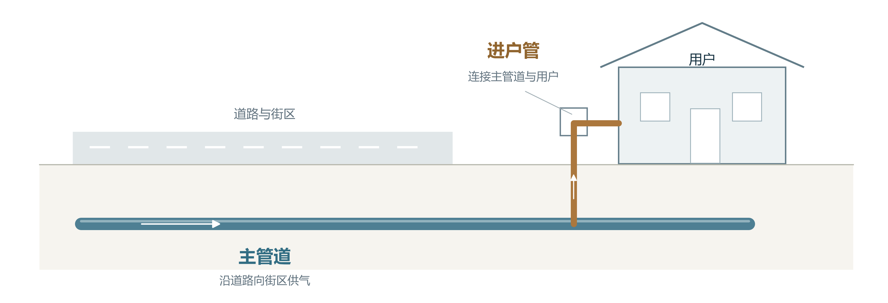
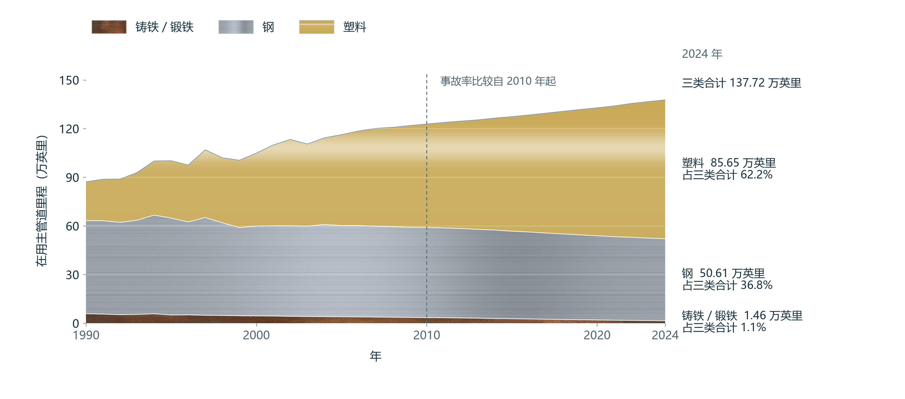
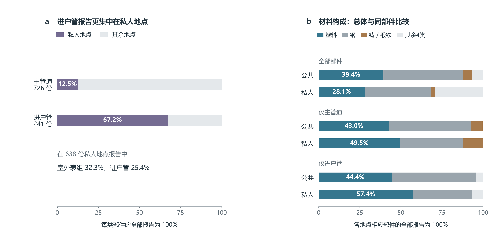
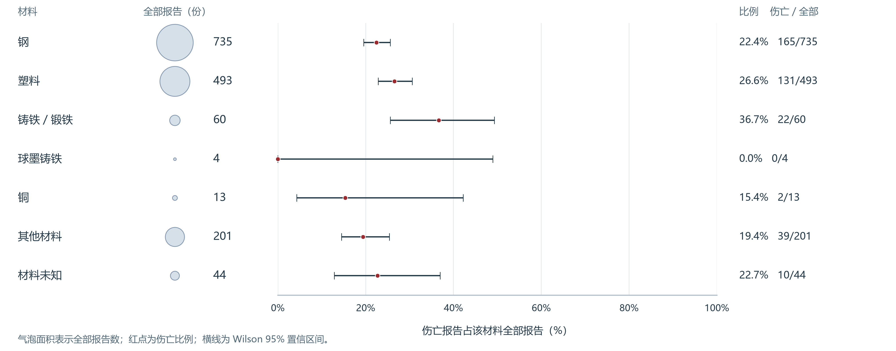
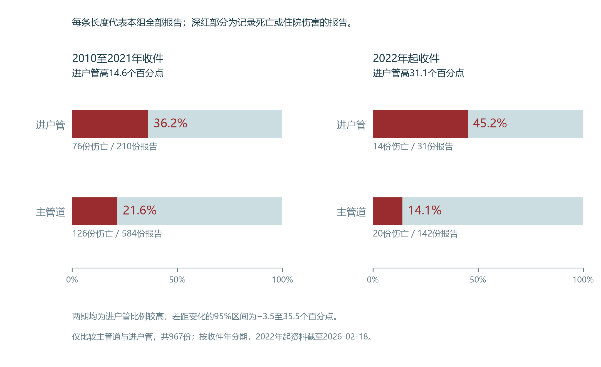
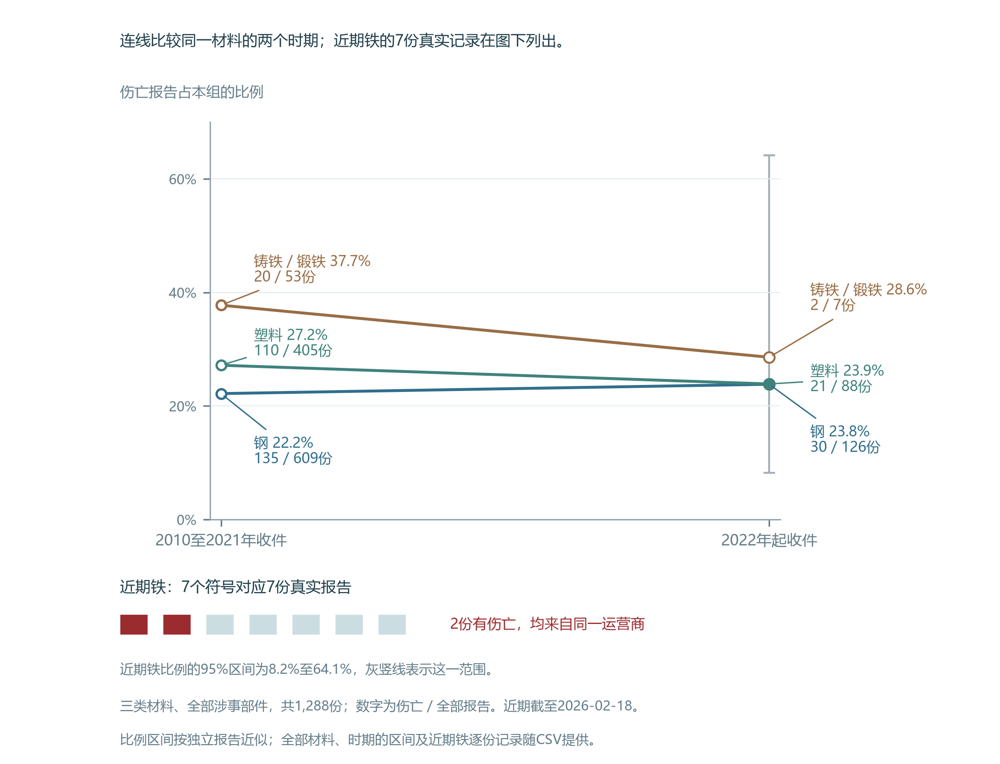
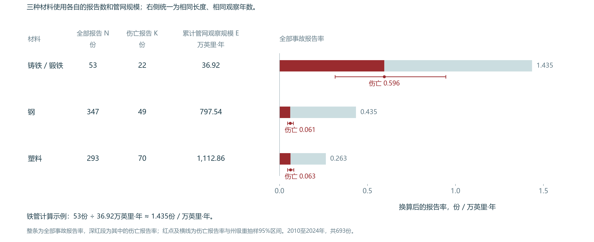
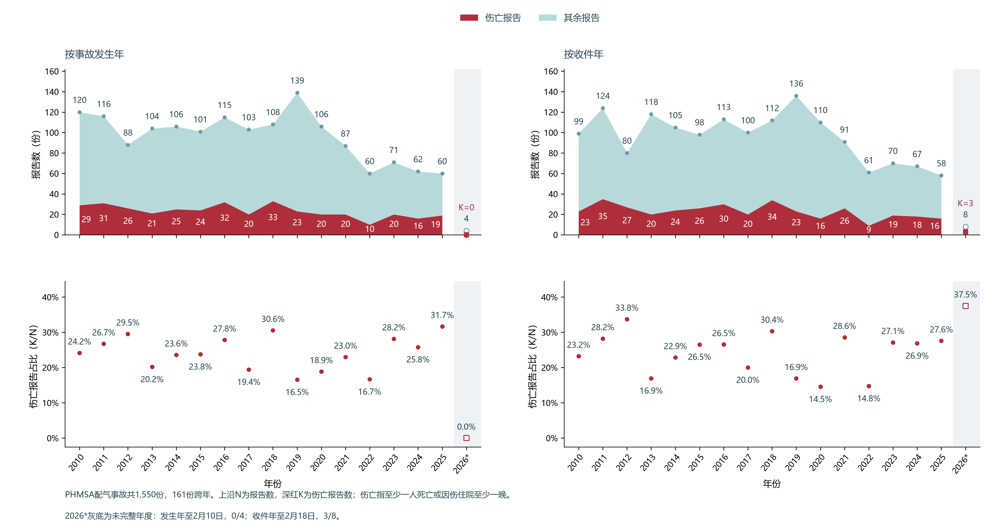

1.1 研究背景与目的
美国的燃气配气系统向家庭、商户等用户供气。主管道沿道路和街区输送燃气，进户管从主管道分支，连接用户。两类管道处在不同的供气环节，图 1说明它们与道路、用户的关系。比较事故后果时，需要同时考虑涉事部件及其所在场地。
主管道沿街区供气，进户管连接用户


我们希望帮助燃气企业结合管网特征、维修历史和事故经验，明确不同设施及作业情境中的检查与人员保护重点。本章交代资料、管网背景与基础差异；第二章结合受伤人员、事故经过和设施条件，提出有依据的因素判断；第三章检验这些因素的关联与预测价值，确定企业判断人员风险时值得收集哪些信息。
1.2 数据来源与清洗
事故报告说明发生了什么、是否有人伤亡；年度管网资料说明每种材料每年有多长的主管道在用。前者用于比较事故后果，后者用于检查报告数量的差别与管网规模有何关系。两类资料均来自美国管道与危险品安全管理局（PHMSA）的公开事故附件和年度管网附件。
一行事故记录是一份报告。依据PHMSA填报定义，本研究中的伤亡报告指至少一人死亡，或因伤入院并至少住一晚的报告；多人伤亡仍计一份。年度记录则按运营商、填报地区和年份列出在用主管道长度。
| 分析用途 | 资料范围 | 整理与采用数量 |
|---|---|---|
| 比较事故中的伤亡后果 | 2010至2026年事故报告 | 清洗前后均为1,550份，其中369份伴随伤亡 |
| 了解全国材料变迁 | 1990至2024年年度管网记录 | 去重并保留非负里程后，共52,083条 |
| 比较材料州级分布与变化 | 2010与2024年，州信息可对应的年度记录 | 两年共2,872条，汇总为52个州或地区、三种材料的156组端点对照 |
| 按管网规模比较事故频率 | 2010至2024年年度管网记录 | 原22,035条，排除2条负里程记录后采用22,033条，也是长期资料的子集 |
计算伤亡比例需要先确认每份报告的人员后果，以及记录是否重复。人数空白、材料未知和两种日期各有不同含义，下表分别说明处理理由、办法及变化。
| 发现的问题 | 为什么需要处理 | 实际处理 | 处理后的变化 |
|---|---|---|---|
| 死亡或住院人数的人员分项有空白 | 表单允许在填“无”后跳过人数，空白不能一概当作未知或补零 | 对照伤亡标记、总人数和已填分项。仅在相应标记为“无”、已填分项均为零时，核对求和按零处理；原始空白保留 | 伤亡标记、总人数与人员分项逐份相符；没有因空白删去报告 |
| 44份报告的材料为“未知” | 删除后会同时丢失其中的伤亡记录 | 单列“材料未知”，不猜测材质，也不并入其他材料 | 44份全部保留，其中10份伴随伤亡 |
| 两份报告的运营商和事故时间相同 | 只按运营商和时间去重，可能误删不同事故 | 核对报告编号及事故经过，确认地点和设施 | 两案地点、设施不同，均保留 |
| 日期格式不统一；161份报告的发生年与收件年不同 | 混用年份会改变分期，也会匹配到错误年份的管网长度 | 保留原日期，另存统一格式。发生年用于匹配里程，收件年用于分期比较 | 分别使用两种年份，跨年报告全部保留 |
| 5,475个文本单元格外有成对引号 | 外层引号会影响类别名称的识别与文字匹配 | 只去除成对的外层引号，保留内部文字 | 文本格式统一，各类别报告计数不变 |
| 2010至2024年有两条年报的塑料里程为−0.5英里 | 负长度没有实际含义，会低估用于比较的管网长度 | 排除这两条年度记录，不将负数改成零 | 该时期年报由22,035条减为22,033条，事故报告仍为1,550份 |
逐类清洗前后计数核对显示，清洗前后的事故报告数相同；排除的两条负里程均属于年度资料。事故日期覆盖至2026年2月，年度里程覆盖至2024年，分期比较和里程比较分别采用相应时期的记录。
1.3 管网的材料变迁与地区分布
比较材料的事故表现，首先需要了解各类管网有多大规模、分布在哪里。1990至2024年的年报显示，塑料在用长度增加，铁管总体减少，钢与塑料构成主管网的主体（图 2）。铁管沿用原表“铸铁／锻铁”类别，与球墨铸铁分列。
塑料在用长度增加，铁管规模总体缩小



2010至2024年，塑料主管道增加的在用长度超过铁、钢减少的总长度，三类主管道合计净增14.89万英里。图 3显示各州的材料净变化，同图可查2024年现存规模。塑料在全部52个州或地区增加，铁管在35个地区减少，钢管在45个地区减少。
各州铁、钢、塑料主管道的分布与变化，2010至2024年
净变化是两个年末在用长度的差值，可能包含新增、退役以及申报修订或类别调整。年报没有逐段连接退役设施与新增设施，因此铺设规模的变化不能当作逐段替换记录。2024年现存铁管的67.3%位于新泽西、纽约、马萨诸塞、宾夕法尼亚和密歇根五州，五州变化明细列于章末附录。企业参考全国铁管事故经验时，应先核对当地仍在使用的材料及其维修记录。
1.4 部件、地点与材料的伤亡差异
企业安排人员保护，既要关注伤亡报告的数量，也要比较同类事故中伴随伤亡的比例。虽然主管道的伤亡报告更多，但进户管事故伴随伤亡的比例更高；私人地点的比例也高于公共地点（图 4）。流带表示报告份数，类别旁的等长条以该类全部报告为100%，用于比较组内伤亡比例。
进户管与私人地点的组内伤亡比例较高


按部件比较历史伤亡比例，为判断同类事故提供了经验起点。第三章仅用早期资料形成部件参照，再检验增加其他信息能否改善伤亡判断。
同一部件分布在不同场地，部件与地点的伤亡差异需要结合实际组合理解。约三分之二的进户管报告来自私人地点，主管道约为八分之一（图 5）。在全部私人地点报告中，最多的部件是室外表／调压器组，进户管约占四分之一。进户管的地点组成按进户管报告计算，私人地点的部件组成按私人地点报告计算。
进户管多见于私人地点，材料组成还随部件改变



地点之间的材料比较也受部件构成影响。全部部件合计时，公共地点报告中的塑料占比较高；分别限定主管道和进户管后，私人地点的塑料占比均较高。因此，解释地点与材料的关系，应在相同部件内复查。这里的公共、私人指报告中的场地类别，私人地点不等于住宅。
设施检查还需关注不同材料的事故后果。虽然钢的报告数最多，但铁管的观察伤亡比例较高（图 6）。铁管报告较少，图中的估计区间也较宽，说明该比例的估计较不精确。
铁管事故中的伤亡比例较高，报告较少的材料估计范围较宽


铁管分别与钢、塑料直接比较时，证据的明确程度不同。由于同一运营商的报告可能相关，下表的差值区间以运营商为单位重复抽样估计；区间跨过零表示差值可能为正，也可能为负。
| 全期材料直接比较 | 伤亡比例差 | 95%区间，百分点 | 本次判断 |
|---|---|---|---|
| 铁管减钢管 | 高14.2个百分点 | 2.7至26.9 | 支持铁管高于钢管 |
| 铁管减塑料管 | 高10.1个百分点 | −1.2至22.6 | 方向仍不确定 |
部件、地点和材料的总体检验也得到关联证据，完整计数和检验过程见资料说明。这些结果说明哪些事故类别的人员后果值得关注；近期记录与在用长度的比较，则用于判断历史差异能否用于当前设施评估。
1.5 近年来的部件与材料比较
企业参考历史事故安排近期工作，需要确认涵盖十余年的总体差异在近年是否仍然出现。本节按PHMSA收件年比较2010至2021年与2022年起的报告；后一期资料截至2026年2月18日。两图均从左至右排列早期与近期。
进户管的伤亡比例在两个时期都高于主管道（图 7）。虽然近期观察到的差距更大，但差距变化的95%区间仍包含缩小与扩大，尚不能确认差距随时间扩大。
两个时期均观察到进户管的伤亡比例较高



近期钢与塑料的观察伤亡比例接近，都约为24%（图 8）。铁管近期只有7份报告，其中2份伴随伤亡，这2份来自同一家运营商。铁管的估计范围很宽，近期材料排序的依据较弱。
近年来钢管与塑料管的伤亡比例接近，铁管仅有7份报告



两期均出现的部件差异，使进户管涉及的受伤人员与任务成为第二章的比较重点。近期铁管报告较少，材料判断主要依据全期结果。下一节限定主管道及其阀门，结合在用长度比较事故频率；逐年报告数与比例保留于资料说明。
1.6 管网规模与事故频率
铁管的在用长度远小于钢和塑料，事故份数需要换算到同样长度、同样观察年数后比较。本节采用2010至2024年发生的铁、钢、塑料主管道及主管道阀事故，共693份，其中141份伴随伤亡；每份均有对应州、年份和材料的有效年度里程。
计算先逐年累计每种材料的“在用长度×1年”，覆盖2010至2024年这15年。1万英里运行1年，与1千英里运行10年，累计值都为1万英里·年。报告数除以相应材料的累计值，统一换算为每万英里·年的报告数。图 9列出原始报告数、伤亡报告数和15年累计值，旁边是统一单位后的两种报告率。
虽然铁管报告数少，但归一化后的事故报告率更高



虽然铁管的原始报告数最少，但统一长度和观察年数后，其全部事故报告率约为钢管的3.30倍。铁管事故中的伤亡比例也较高，两项相乘后的伤亡报告率约为钢管的9.70倍，95%区间为4.76至16.79倍。这一结果支持企业复核现存铁管，具体检查对象仍需结合当地泄漏、维修和安装年代记录确定。
虽然塑料的全部事故报告率低于钢，但事故中的伤亡比例较高，两项相乘后的伤亡报告率与钢接近。塑料相对钢的伤亡报告率比为1.02，95%区间为0.71至1.38，尚不能确认谁更低。相近的伤亡报告率包含不同的事故频率和事故内伤亡比例，因此还需分别研究相关的损伤与受伤过程。
报告数、累计管网规模与报告率的完整计算
每种材料使用自己的报告数及长度。N为全部事故报告数，K为伤亡报告数，单位均为份；Ly为第y年年末主管道长度，单位为英里，年末值近似该年的在用长度。E是15个年度“在用长度×1年”的合计，单位为英里·年。
R是全部事故报告率，H是伤亡报告率，单位均为份／万英里·年。K／N为事故中的伤亡比例，计算乘积时取0至1的小数。乘10,000仅用于换算单位。
例如铁管15年累计369,228.181英里·年，有53份事故报告，其中22份伴随伤亡。计算得到全部事故报告率1.435、伤亡报告率0.596份／万英里·年。钢和塑料的伤亡报告率分别为0.061和0.063。原始报告数、里程与计算值；率比及区间。
按长度和时间比较报告率，参考PHMSA统计示例。进户管尚未建立按年份、材料对应的长度记录，本节不计算其每英里报告率。
本章为第二章确定了需要解释的差异。进户管在两个时期均有较高的伤亡比例，需要结合场地与人员身份判断差别涉及谁。钢与塑料的伤亡报告率接近，但事故频率和事故内伤亡比例不同，需要查明损伤与受伤过程。铁管在用规模小、分布集中，单位长度和时间内的报告率仍较高，需要结合设施条件与当地环境解释。第二章据此形成因素判断，第三章再检验这些因素是否有助于人员风险判断，以及哪些信息值得采集。
资料与计算说明
研究计划的部件初步试算约为进户管37%、主管道20%。本次逐份核对得到90／241＝37.3%、146／726＝20.1%，与初步试算的方向一致；正文采用本次完整计数。
事故附件获取于 2026 年 11 月 7 日。原始资料有 468 个字段，分析表选用部件、材料、地点、日期和伤亡等 15 个字段，并派生 5 个日期或伤亡指标。事故发生年用于匹配年度里程，报告收件年用于分期比较；收件日期覆盖 2010 年 2 月 19 日至 2026 年 2 月 18 日。
人员分项的空白与填报顺序有关。填报者选择无死亡或无因伤住院后，可以跳过相应人数。清洗时结合伤亡标记和已填人数解释空白，原始记录予以保留。
数据清洗、计数、比例和区间均由 Python 计算，Wilson 区间采用 statsmodels。DOT 目录标注公开访问，许可名称未单列。
资料整理
PHMSA的上报条件包括死亡、住院伤害、达到标准的财产损失或燃气释放等情形，因此同时包含有伤亡和因其他条件上报的事故。事故发生日期覆盖2010年1月3日至2026年2月10日。官方数据目录；PHMSA上报条件与伤害定义。
清洗的具体问题、理由与变化见1.2。原始人员分项保留，派生伤亡标记逐份与总人数核对。州级地图采用2010与2024年两个年末的实际记录，两年均覆盖50州、华盛顿特区与波多黎各；不在年份之间插值。两个负里程年度记录的运营商、州与年份见后文事故与里程匹配说明。
比例及区间的计算
比例估计：Wilson方法、计算公式与统计假定
横线为Wilson 95%置信区间，用于表示根据报告估计同类事故伤亡概率的精度。全体报告的观察比例为369／1,550＝23.8%，对应区间为21.8%至26.0%。选择Wilson方法，是因为它适用于报告数较少或观察比例接近0%、100%的情形，计算结果保持在0%至100%之间。计算只需该类伤亡份数和全部报告数。Wilson方法说明
记该类全部报告数为 n，伤亡报告数为 k，p＝k／n。95% 置信水平取 z＝1.96。
计算采用独立二项近似，假定同类报告相互独立，具有共同的伤亡概率。在这种假定下，如果反复取得同样份数的记录并计算区间，约 95% 的区间会包含真实伤亡概率。进户管阀有 2 份报告，两份都有伤亡；观察比例为 100%，区间为 34.2% 至 100%，精度较低。同一运营商的报告可能有关联，后续部件差值和模型比较采用运营商整组重抽样估计区间。
逐年事故比较
图 S1按事故发生年与收件年分别汇总同一批1,550份报告，每列含369份伤亡报告。2026年仅有年初记录，发生日期截至2月10日，收件日期截至2月18日。发生与收件跨年的161份报告中，37份伴随伤亡。
按发生年和收件年分别统计事故数量与伤亡比例



按发生年，2019年139份报告中23份伴随伤亡，为16.5%；2025年60份中19份伴随伤亡，为31.7%。伤亡报告减少4份，但全部报告降幅更大，所以伤亡比例上升。年度图同时保留数量和比例，避免将构成变化直接解释为事故增加。
年度里程与材料趋势
图 2使用1990至2024年材料年报的去重、非负里程汇总，共52,083条有效年度记录。1990至2009年为历史表单，2010至2024年为当前事故率比较范围。三种主要材料之外的球墨铸铁、铜、修复铸铁及其他材料仍保留在来源表中，图 2展示主分析使用的三类材料。材料记录与安装年代记录分别汇总，图中趋势描述在用规模。材料年度里程
1990至2024年，塑料在用长度由23.9万英里增至85.6万，钢由57.4万降至50.6万，铁管由5.83万降至1.46万；塑料在2006年超过钢。2010至2024年，铁管由3.46万英里降至1.46万，仍使用铁管的州或地区从35个减至26个；塑料由63.75万英里增至85.65万。管道更新的行业背景见PHMSA说明。
图 3另取2010与2024年的2,872条年度记录，按州和原始材料类别汇总。每个地区分别计算2024年减2010年的在用长度，共156组材料端点对照，单位为英里。塑料全国净增218,993.932英里，铁管净减19,983.149英里，钢管净减50,119.011英里，三类合计净增148,891.772英里。各州两年存量与净变化见地图完整数据，五州明细见本章最后的附录。
管网规模与报告率的计算
1.6说明逐年累计“在用长度×1年”的方法，并给出全部事故报告率和伤亡报告率的公式。PHMSA的统计示例采用“每千英里每年”；American Gas Foundation委托的配气研究在主管道材料比较中采用“每十万英里·年”。正文统一为每万英里·年，换算单位不改变材料间的率比。PHMSA统计示例，第46页；AGF配气研究，附录A第16至19页。
本研究以PHMSA年报的年末里程近似该年的在用长度；年内新增和退役的具体时点未单独计入。年报填写说明，第1页。
事故与里程的匹配
年度资料覆盖 2010 至 2024 年。事故按发生年匹配，统计单位为已收录的报告份数；伤亡报告指至少一人死亡或因伤住院至少一晚。693 份中，691 份涉及主管道，2 份涉及钢制主管道阀。
年度资料有 22,035 条记录，其中两条申报的塑料里程为 −0.5 英里，均来自堪萨斯州同一家运营商，分别为 2022 和 2023 年。负长度没有实际含义，排除两条后采用 22,033 条年报。693 份事故均有对应州、年份和材料的有效里程。年度记录与排除明细
材料按原表类别对应。事故中的铸铁／锻铁对应年度主管道铸铁里程；年度表另列的修复铸铁累计 326.052 英里·年，保持单独分类。早期事故表及 2010 至 2014 年报只有铸铁总类，修复状态缺少独立记录，全期结果因此沿用原表的铁管类别。事故字段说明
铁管的53份属于2010至2024年主管道及主管道阀范围，前文60份材料报告覆盖更多部件及更长时期。进户管仅比较事故中的伤亡比例，本研究尚未建立按年份、材料对应的进户管长度记录，未计算其每英里报告率。
2010至2024年，新泽西、纽约、马萨诸塞、宾夕法尼亚和密歇根五州占全国铁管累计里程的63.2%；53份铁管主管道及主管道阀事故中，34份来自五州，占64.2%。两项份额接近，事故集中与在用铁管的铺设集中相对应。
按州重抽样时，每轮从 52 个州或辖区中有放回地抽取 52 个，抽中的辖区可重复出现。重新汇总事故数和里程，计算全国报告率与材料率比。5,000 轮结果的 2.5% 和 97.5% 分位数构成相应的 95% 区间。
同州同年比较采用条件 Poisson 模型。模型比较一个州、一年内两种材料的伤亡报告数，并按各自里程调整观察规模。铁管与钢管共有 466 个州年组合，其中 59 个组合记录了伤亡报告并提供率比信息。铁管相对钢管的调整率比为 10.20，95% 区间为 4.41 至 17.82，与全国汇总率比 9.70 接近。这项模型属于课程方法之外的敏感性分析，用于检查地区和年份构成的影响。
部件、地点和材料的联合组成
图 5使用同一批1,550份报告的部件、地点和材料原始分类。左侧两条比例均以各部件的全部报告计算，表示其中来自私人地点的份额；右侧每条以该地点、该部件范围内的全部报告计算，表示各材料的份额。全部部件的公共／私人地点分别为470／638份；主管道为363／91份，进户管为45／162份。
材料原始七类全部保留。图中仅将球墨铸铁、铜、其他材料和材料未知合称“其余4类”；铸铁／锻铁仍单列。所有组成均描述已报告事故，不表示各地点实际管网的材料占比。分别限定部件只解决这里的部件构成差别，尚未控制年份、州、运营商或设施年代。
总体关联与材料直接对比
伤亡比例＝伤亡报告数÷该类全部报告数×100%。部件比较为进户管90／241＝37.3%、主管道146／726＝20.1%，相差17.2个百分点；私人地点179／638＝28.1%，公共地点101／470＝21.5%，相差6.6个百分点。材料比较包括事故中的管道、阀门和表具，球墨铸铁与铸铁／锻铁分列，铜、其他材料及材料未知均保留。
以全体369／1,550＝23.8%作为各类别相同比例的参照，进户管241份应对应57.4份伤亡报告，实际为90份。图 S2列出各类别的实际计数、参考计数与总体检验，Pearson χ²汇总伤亡和其余报告两项计数的偏离。
总体关联检验使用本章的全部 1,550 份报告及原始类别。Pearson χ² 比较实际计数与无关联时预期计数的差异。在同一运营商、同一收件时期内，伤亡标记置换 9,999 次，评价观察到的差异有多突出；这种做法保留小类别，并以组内伤亡标记可交换为前提。
Cramér V 将原始列联表的关联强度归一到 0 至 1。部件为 0.184、材料为 0.089、地点为 0.084，保留作原表的描述结果；各分类的具体差异由正文的百分点差与报告率解释。
预先确定的部件、材料和地点三项关联检验采用 Holm 校正，控制多次检验中误报关联的机会。部件、材料、地点的校正 p 值依次为 0.0006、0.0336、0.0114。以 0.05 为判断标准，三项均有总体关联的统计证据。扩大到 13 项探索比较时，相应值为 0.0014、0.168、0.0342。材料总体关联的判断对校正范围较敏感，因此材料结论同时依据具体差异、区间及匹配里程结果。
十三项包括预定的部件、材料、地点三项关联，部件与时期和地点的两项交互，四项同州同年材料率比较，以及四项按州和年份分别调整的重复比较。三项校正用于研究计划中的关联检验，十三项校正用于检查扩大探索范围后判断是否改变。
全期铁管相对钢管的伤亡比例高14.2个百分点，运营商成组重抽样95%区间为2.7至26.9；相对塑料高10.1个百分点，区间为−1.2至22.6。前者支持铁管高于钢管，后者仍容许两个方向。两项材料直接比较
材料直接对比使用全库 1,550 份报告中的铁、钢与塑料记录。全部 222 家运营商共同重抽 5,000 轮，每轮对铁—钢、铁—塑料采用相同抽样权重，所有轮次均包含三类材料。各对比分别取 2.5% 和 97.5% 分位数作为边际 95% 区间；两项区间分别估计，未作同时覆盖校正。计算未生成 p 值。
总体关联检验比较实际计数与无关联时的参考计数
设施评估的背景资料：PHMSA配气管网管理要求。
附录：现存铁管最多五州的材料变化
五州按2024年铁管在用长度选取并排序，表中净变化均为2024年减2010年，单位为英里；负值为减少，正值为增加。数值显示至一位小数，计算保留原始精度。全国铁管的67.3%位于这五州，具体位置和两年存量可在图 3查询。
| 州 | 2024年铁管在用长度 | 铁管净变化 | 钢管净变化 | 塑料管净变化 |
|---|---|---|---|---|
| 新泽西 | 2,469.4 | −2,745.6 | −2,934.0 | +8,504.6 |
| 纽约 | 2,166.8 | −2,473.1 | −4,246.1 | +9,379.1 |
| 马萨诸塞 | 2,125.8 | −1,864.4 | −1,644.5 | +4,262.1 |
| 宾夕法尼亚 | 1,827.6 | −1,356.5 | −4,656.7 | +8,447.7 |
| 密歇根 | 1,246.7 | −1,933.1 | −1,814.9 | +9,610.3 |
五州完整数值。来源：PHMSA年度管网记录，沿用图 3的材料类别、时期和汇总方法。